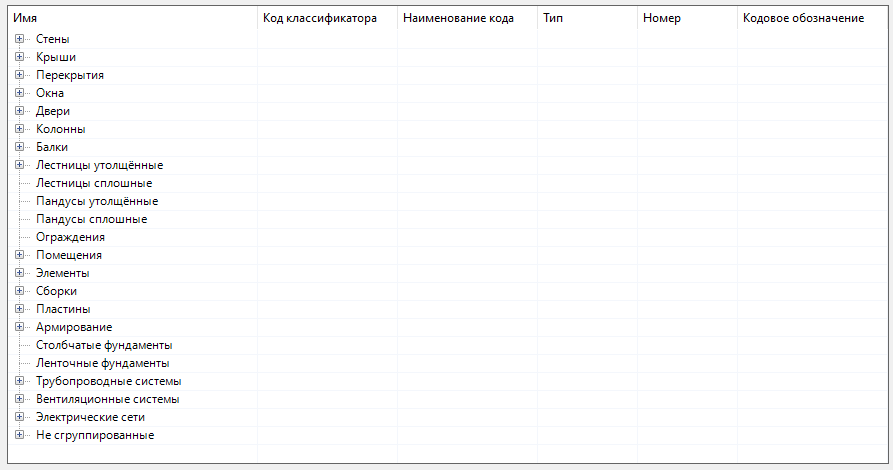
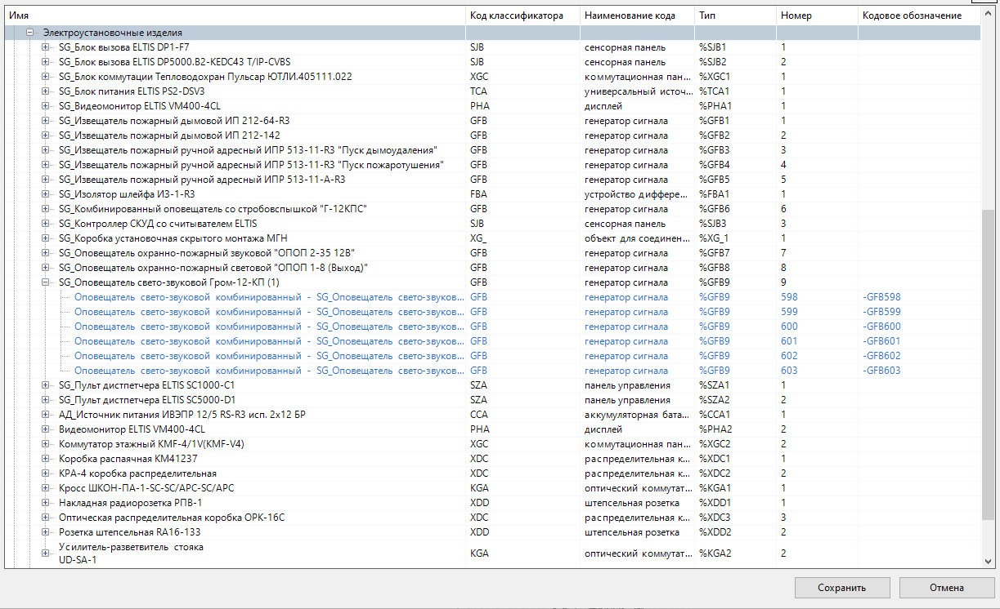

Группы (groups)¶
Иерархия (дерево объектов) строится по группам объектов, схожим по определенным признакам.
Корневой или родительской группой является сама ЦИМ Renga, содержащая все объекты проекта. Объекты, в свою очередь, группируются по подгруппам внутри родительской группы по принципу „от общего к частному“:
Модель, включащая все подгруппы дерева объектов.¶ 1{
2 "groupName": "Модель",
3 "subgroups": [
4 {
5 "groupName": "Стены",
6 "subgroups": [..]
7 },
8 {
9 "groupName": "Перекрытия",
10 "subgroups": [..]
11 },
12 ..
13 ]
14}
Корневая группа в дереве объектов не отображается, она служит только для формирования дальнейших подгрупп:
Количество подгрупп в одной группе и уровней вложенности подгрупп - не ограничивается. Таким образом, пользователь может построить любую произвольную иерархию объектов.
Группы могут быть:
Пользовательские (указываемые пользователем вручную)
Пользовательские (manual)¶
Группы, в которых будут находится только те объекты ЦИМ, которые соответствуют параметрам, заданным пользователем.
Задаются с помощью следующих атрибутов:
groupName— имя группы/подгруппы;filter— (optional) фильтр, отбирающий объекты в группу по указанным критериям. Если не указан, то группа принимает все не сгруппированные объекты;storeSubgroupsOnly— „Хранить только подгруппы“ (optional) булевый параметр (true/false). По-умолчанию равенfalse. Если равенtrue, то все объекты, не входящие в подгруппы, будут исключены из группы;subgroups— (optional) коллекция подгрупп, входящих в данную группу.
Автоматические (auto)¶
Позволяют сформировать автоматически несколько подгрупп объектов, разделенных общим признаком, указанным в параметре autoGroupBy.
Задаются с помощью следующих атрибутов:
autoGroupBy— имя атрибута, по которому будут отбираться объекты в подгруппы. Наименования подгрупп будут браться из значений данного атрибута;prefixGroupName— (optional) префикс в наименовании подгрупп;subgroups— (optional) коллекция подгрупп, входящих в данные группы.
Рассмотрим пример. Мы создали группу Электроустановочные изделия, в которую (с помощью фильтра) отобрали из всей ЦИМ объекты, у которых ObjectType соответствует WiringAccessory. Эти объекты будут разделены по автоматическим подгруппам, которые будут группировать объекты по значению атрибута Стиль электроустановочного изделия/Name:
Электроустановочные изделия, в которую попадают все объекты с ObjectType равным WiringAccessor, включающая подгруппы, разделенные по Стиль электроустановочного изделия/Name.¶ 1{
2 "groupName": "Электроустановочные изделия",
3 "filter": {
4 "valueName": "ObjectType",
5 "instruction": "exact",
6 "value": "WiringAccessory"
7 },
8 "subgroups": [
9 {
10 "autoGroupBy": "Стиль электроустановочного изделия/Name"
11 }
12 ]
13}
По таким правилам BIM Classifier сформирует подобное дерево объектов:
